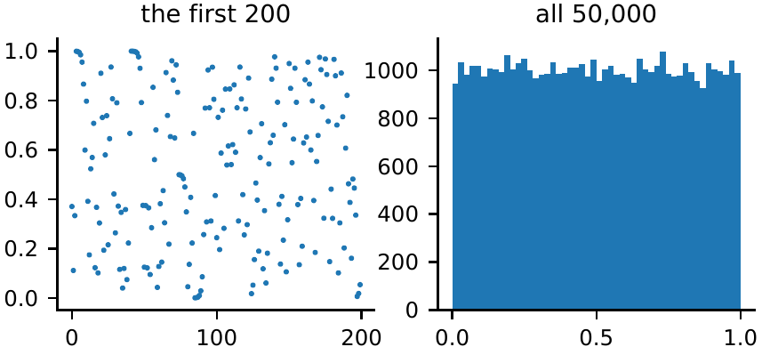
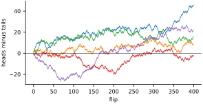
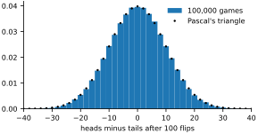
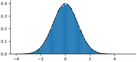
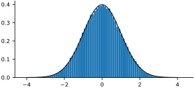
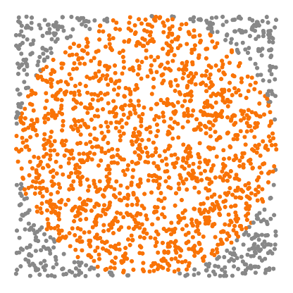
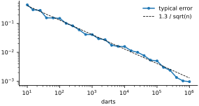

The last chapter made a promise: we will stop designing the templates ourselves and let the machine find its own. The machine will start where every learner starts, by guessing. Its first weights will be random numbers, the examples it studies will be shuffled into a random order, and in the next chapter its very first strategy will be nothing but random guessing. Before we hand the search over to chance, then, it is worth getting to know chance.
This is a short chapter about randomness with NumPy. We will make random numbers from scratch and see how they can fail, flip coins until a bell curve appears, and use random darts to compute . Along the way we will meet the two facts about randomness that matter most for deep learning: sums of many random things are predictable, and their spread grows only as the square root of how many there are. Both will come back: in how a network’s starting weights are chosen (Chapter 12), and in how much to trust a measured accuracy (Appendix A). A last, optional section lets simulation settle three puzzles that fool most people.
A recipe for chaos
A computer cannot flip a coin. Everything it does follows instructions, so its “random” numbers come from a recipe, a pseudo-random number generator, that turns one number into the next in a way that is hard to predict. Here is a toy recipe: take a number between 0 and 1, triple it, and keep only the part after the decimal point.
x = 0.12345 # the seed
xs = []
for i in range(10):
x = 3 * x % 1 # triple it, keep the part after the point
xs.append(round(x, 4))
print(xs)[0.3704, 0.1111, 0.3332, 0.9995, 0.9984, 0.9951, 0.9852, 0.9555, 0.8664, 0.5991]
Each number is the seed of the next. Run it fifty thousand times and the values look scattered and cover the interval evenly (Figure 9.1).
x = 0.12345
xs = np.zeros(50_000)
for i in range(len(xs)):
x = 3 * x % 1
xs[i] = x
plt.figure(figsize=(4.6, 1.8))
plt.subplot(1, 2, 1)
plt.plot(xs[:200], '.', ms=2)
plt.title('the first 200')
plt.subplot(1, 2, 2)
plt.hist(xs, bins=50)
plt.title('all 50,000')
plt.show()
Even here, look closely at the printed list: 0.9995, 0.9984, 0.9951, 0.9852… When a value lands near a third, the next few numbers creep along near 1 in a pattern no coin would make. And there is a deeper problem. Each step triples any small error in the number, along with the number itself. The computer stores the seed with an error of about one part in , and is about , so after some 34 steps the digits we are looking at are nothing but magnified round-off: a different computer, or a seed changed in its last digit, gives a completely different sequence. That extreme sensitivity to the starting point is what mathematicians call chaos, and it is exactly what makes the recipe look random.
A small change shows how badly a recipe can fail. Doubling instead of tripling looks just as reasonable on paper:
x = 0.12345
for i in range(60):
x = 2 * x % 1
if i % 10 == 9:
print(i + 1, x)10 0.4128000000000043 20 0.7072000000043772 30 0.1728000044822693 40 0.94720458984375 50 0.9375 60 0.0
After a few dozen steps it is stuck at exactly zero, forever. The computer stores a number in binary, as a string of 1s and 0s with about 53 significant binary digits, and doubling shifts those digits one place to the left. Once they have all been shifted out, nothing is left. Good generators are designed by specialists and tested for exactly these failures. NumPy’s current one is called PCG64, and it is what default_rng, which we met in Chapter 6, creates. Its seed plays the same role as our 0.12345: the same seed, the same sequence. In this chapter rng = np.random.default_rng(seed=0) makes the random numbers.
Flipping coins
A coin flip is a choice between two values. Counting heads as and tails as , the sum of ten flips is “heads minus tails”:
flips = rng.choice([-1, 1], size=10)
print(flips)
print(flips.sum())[ 1 1 1 -1 -1 -1 -1 -1 -1 1] -2
Keep a running total, flip after flip, and we get a random walk: a path that drifts up and down with no plan at all (Figure 9.2). cumsum computes all the running totals in one call.
steps = rng.choice([-1, 1], size=(5, 400))
paths = steps.cumsum(axis=1) # running total after each flip
plt.figure(figsize=(4.6, 2.2))
plt.plot(paths.T, lw=0.8)
plt.axhline(0, color='k', lw=0.5)
plt.xlabel('flip')
plt.ylabel('heads minus tails')
plt.show()
Each walk wanders off in its own direction, and some go a long way. A walker who is 30 ahead after 400 flips may feel that luck is on their side, but every flip is still fifty-fifty. Now play the game a hundred thousand times, a hundred flips each, and keep only the final scores:
N = 100 # flips per game
games = rng.choice([-1, 1], size=(100_000, N))
totals = games.sum(axis=1)
print(totals[:10])
print(totals.mean(), totals.std())[ -4 -10 12 12 2 12 -12 14 6 4] 0.04416 9.984386305346964
Single games end all over the place, but the hundred thousand games together are very predictable. The average is almost exactly zero, and the typical distance from zero, the standard deviation that std computes, is almost exactly 10.
Pascal’s triangle and the bell curve
Why do the scores pile up near zero? Count the ways to get there. Each row of Pascal’s triangle is made by adding the two numbers above:
rows = 7
P = np.zeros((rows, rows + 1), dtype=int)
P[0, 1] = 1
for i in range(1, rows):
for j in range(1, rows + 1):
P[i, j] = P[i - 1, j - 1] + P[i - 1, j]
print(P[:, 1:])[[ 1 0 0 0 0 0 0] [ 1 1 0 0 0 0 0] [ 1 2 1 0 0 0 0] [ 1 3 3 1 0 0 0] [ 1 4 6 4 1 0 0] [ 1 5 10 10 5 1 0] [ 1 6 15 20 15 6 1]]
Read row 6 as six flips. There is one way to get six heads, six ways to get five (the single tail can be any of the six flips), fifteen ways to get four, and twenty ways to get three heads and three tails. Every sequence of flips is equally likely, so the outcome with the most sequences leading to it is the most likely outcome. Python’s comb gives the entries of any row without building the triangle, so we can compute the exact chances for a hundred flips and compare them with our simulated games (Figure 9.3):
from math import comb
heads = np.arange(N + 1)
paths_to = np.array([comb(N, k) for k in heads], dtype=float)
prob = paths_to / 2**N # every path is equally likely
total = 2 * heads - N # heads minus tails
plt.figure(figsize=(4.6, 2.2))
plt.hist(totals, bins=np.arange(-41, 42, 2), density=True,
label='100,000 games')
plt.plot(total, prob / 2, 'k.', ms=3, label="Pascal's triangle")
plt.xlim(-40, 40)
plt.xlabel('heads minus tails after 100 flips')
plt.legend(frameon=False)
plt.show()
The dots sit on the bars. (A detail you can skip: with density=True, a bar’s height is probability per unit of score. Each bar is two units wide and holds exactly one possible score, since a score is always even, so a bar stands at half that score’s probability, and the dots are halved to match.) Francis Galton built a machine that does this experiment with falling balls: each ball bounces left or right off row after row of pins, and the balls pile up into the same shape at the bottom. The web edition of this book has one you can run.
That shape is the normal distribution, or bell curve, which we sampled in Chapter 6. Its formula has a mean for the center and a standard deviation for the width; is np.exp(x), which we will meet properly in Chapter 11:
def normal_pdf(x, mu, sigma):
return np.exp(-(x - mu)**2 / (2 * sigma**2)) / np.sqrt(2 * np.pi
* sigma**2)
z = rng.normal(loc=0, scale=1, size=100_000)
grid = np.linspace(-4, 4, 200)
plt.figure(figsize=(4.6, 2.0))
plt.hist(z, bins=80, density=True)
plt.plot(grid, normal_pdf(grid, 0, 1), 'k', lw=1)
plt.show()
print(np.mean(np.abs(z) < 1), np.mean(np.abs(z) < 2))0.68321 0.9551

About 68 percent of the numbers fall within one standard deviation of the mean, and about 95 percent within two. Those two percentages are worth remembering.
The square-root law
How wide is the bell for a different number of flips? Let’s measure:
for n in [1, 4, 16, 64, 256, 1024]:
t = rng.choice([-1, 1], size=(20_000, n)).sum(axis=1)
print(f'{n:5d} flips spread {t.std():6.2f} sqrt(N) {n**0.5:5.1f}') 1 flips spread 1.00 sqrt(N) 1.0
4 flips spread 2.01 sqrt(N) 2.0
16 flips spread 4.02 sqrt(N) 4.0
64 flips spread 8.03 sqrt(N) 8.0
256 flips spread 15.92 sqrt(N) 16.0
1024 flips spread 31.97 sqrt(N) 32.0The spread is the square root of the number of flips, almost exactly. Sixty-four times as many flips spread the scores only eight times as far. This square-root law is everywhere. It is why a poll of a thousand people is good to a few percent, and why a casino, which plays millions of games, can be sure of its profit while any single gambler can win.
Nor is there anything special about coins. Add up twelve uniform random numbers between 0 and 1, subtract 6, and the bell curve appears again (Figure 9.5):
u = rng.random((100_000, 12)) # twelve uniform numbers per row
s = u.sum(axis=1) - 6 # their sum, centered on zero
print(round(s.mean(), 3), round(s.std(), 3))
plt.figure(figsize=(4.6, 2.0))
plt.hist(s, bins=80, density=True)
plt.plot(grid, normal_pdf(grid, 0, 1), 'k', lw=1)
plt.show()-0.001 1.0

This is the central limit theorem: add up many independent random numbers, of almost any kind, and the total follows a bell curve, with a spread that grows as the square root of how many were added. Twelve is a convenient number: one uniform number has a standard deviation of , so by the square-root law twelve of them have a standard deviation of exactly 1. For decades this was a standard way to make normal random numbers.
Here is why a book about neural networks cares. A neuron computes a dot product, a sum of hundreds of products, and when its weights are random each product is a random number. Give 10,000 random neurons the same 784-pixel input:
x = rng.random(784) # an "image" of 784 pixels
W = rng.normal(size=(784, 10_000)) # 10,000 random neurons
scores = x @ W
print(round(scores.std(), 2), round(np.sqrt(np.sum(x**2)), 2))15.79 15.88
The scores spread out with a standard deviation equal to the length of the input: square each of the 784 pixels, add them up, and take the square root. In symbols that is , where the Greek (sigma) means “add up,” and it is the straight-line size of the input treated as an arrow in 784 dimensions, just as the square-root law predicts. Stack layers of such neurons and this spread multiplies from layer to layer, which is why the starting size of the weights matters so much. We will meet the problem, and its square-root cure, in Chapter 12.
Throwing darts
Randomness can also compute things that have nothing random about them. Throw darts uniformly at a square two units wide, with a circle of radius 1 inside it. The circle covers of the square, so about of the darts land inside, and four times the fraction that do is an estimate of (Figure 9.6).
n = 1_000_000
pts = rng.random((n, 2)) * 2 - 1 # darts in the square
inside = (pts**2).sum(axis=1) < 1 # ...that land in the circle
print(4 * inside.mean())
m = 2000
plt.figure(figsize=(2.4, 2.4))
plt.scatter(*pts[:m].T, s=1, c=np.where(inside[:m], '#f97306', '#888'))
plt.gca().set_aspect('equal')
plt.axis('off')
plt.show()3.14062

This is Monte Carlo estimation, named after the casino, and the same idea measures any area: throw darts at a box and count the fraction that land inside the shape. How accurate is it? A million darts gave to two decimal places, not six. Repeating the experiment for different numbers of darts shows the trend (Figure 9.7). Both axes of the plot are logarithmic: each step along an axis multiplies by ten, so that a quantity that falls as draws a straight line.
true_pi = np.pi
sizes = np.logspace(1, 6, 26).astype(int)
errors = []
for n in sizes:
trials = [4 * np.mean((rng.random((n, 2))**2).sum(axis=1) < 1)
for _ in range(20)]
errors.append(np.mean(np.abs(np.array(trials) - true_pi)))
plt.figure(figsize=(4.6, 2.2))
plt.loglog(sizes, errors, '.-', label='typical error')
plt.loglog(sizes, 1.3 / np.sqrt(sizes), 'k--', lw=0.8,
label='1.3 / sqrt(n)')
plt.xlabel('darts')
plt.legend(frameon=False)
plt.show()
The square-root law again, now working against us: each extra decimal place of accuracy costs a hundred times as many darts. The same law governs every accuracy we will measure in this book. An accuracy measured on 50 images is an estimate from 50 darts, uncertain by several percentage points; on 10,000 images it is good to a fraction of a point. We will need that when we compare results.
Excursion: when intuition fails
This last section is for fun; nothing later depends on it. Simulation is the quickest way to settle an argument, as long as it plays the game exactly as described. Three classic puzzles fool almost everyone.
How many people must be in a room before two of them probably share a birthday? Most people guess well over a hundred. We fill a room with random birthdays, sort them, and check for two equal neighbors:
def shared_birthday(people, trials=20_000):
days = rng.integers(0, 365, size=(trials, people))
days.sort(axis=1)
return np.mean((np.diff(days, axis=1) == 0).any(axis=1))
for people in [10, 20, 23, 30, 50, 70]:
print(people, shared_birthday(people))10 0.1186 20 0.41085 23 0.50275 30 0.7063 50 0.97155 70 0.99935
Twenty-three people are enough for an even chance, and with seventy a shared birthday is all but certain. The intuition fails because it counts the wrong thing. Twenty-three people make 253 different pairs, and each pair has a small chance of matching.
You pick one of three doors. A car is behind one of them, goats behind the others. The host, who knows where the car is, opens a different door to show a goat and offers to let you switch. Should you? This is the Monty Hall problem, after the host of the television game show that used doors this way. Many people are certain it makes no difference. The simulation plays the game exactly as described, host and all. Numbering the doors 0, 1 and 2, the three numbers add up to 3, so once two doors are known, 3 - one - other is the third:
trials = 100_000 # doors are numbered 0, 1, 2
car = rng.integers(0, 3, trials)
pick = rng.integers(0, 3, trials)
other = (pick + rng.integers(1, 3, trials)) % 3 # a door not picked
host = np.where(pick == car, other, # two goats left: either one
3 - pick - car) # otherwise: the one goat left
switch = 3 - pick - host # the door neither of them chose
print('stay ', np.mean(pick == car))
print('switch', np.mean(switch == car))stay 0.33473 switch 0.66527
Switching wins two times in three. The simulation shows why, too: when your first pick was right, the host can open either goat door; when it was wrong, which happens two times in three, the host has no choice, and the door left for you to switch to is the car.
A cereal brand puts one of 50 different cards in every box. How many boxes must you buy to collect them all? This is the coupon collector’s problem:
def boxes_needed(n):
seen, count = set(), 0
while len(seen) < n:
seen.add(int(rng.integers(n)))
count += 1
return count
n = 50
runs = [boxes_needed(n) for _ in range(5000)]
print(np.mean(runs), n * sum(1 / k for k in range(1, n + 1)))224.0996 224.96026691647114
About 225, four and a half times the number of cards, and the simulation agrees with the formula printed beside it. The first cards come quickly; the last one takes on average 50 boxes by itself.
What chance teaches
Randomness will be everywhere from here on, so here is what to carry forward:
Random numbers come from a recipe and a seed. Fix the seed and an experiment repeats exactly.
A single random outcome tells you little. Many outcomes, added up or averaged, are predictable: they follow a bell curve.
Spread grows as the square root of how many things are added. That is why averages over more data are more trustworthy, and why the starting size of a network’s weights must shrink as layers get wider.
When the mathematics is hard, simulate, but simulate the real situation. A few lines of NumPy can check a formula, or replace one.
In the next chapter we put chance to work. A machine that knows nothing about digits will guess its weights at random, keep the guesses that score better, and slowly learn to read.